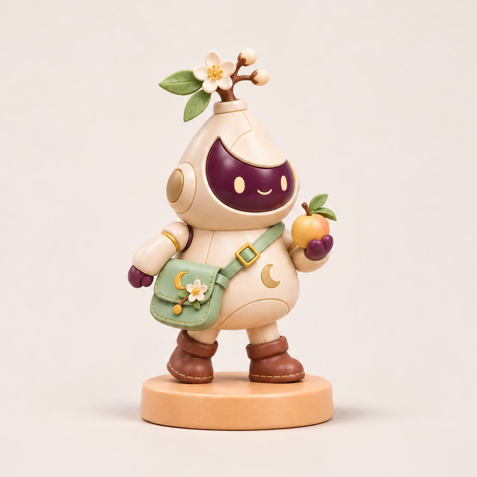
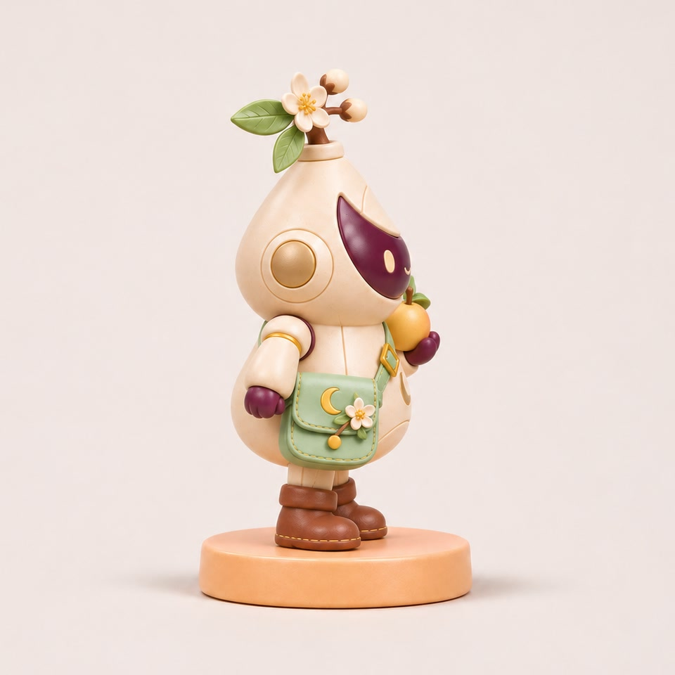
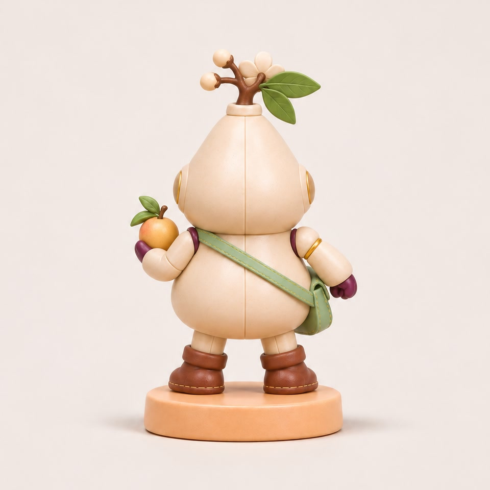
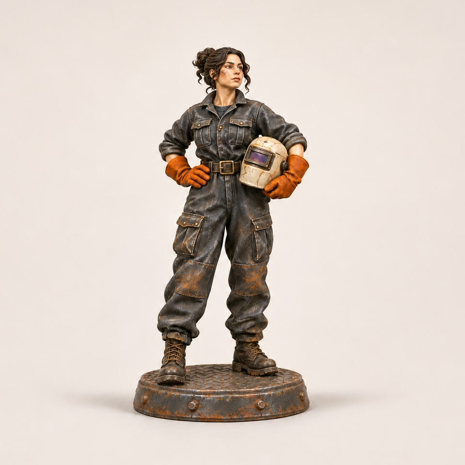
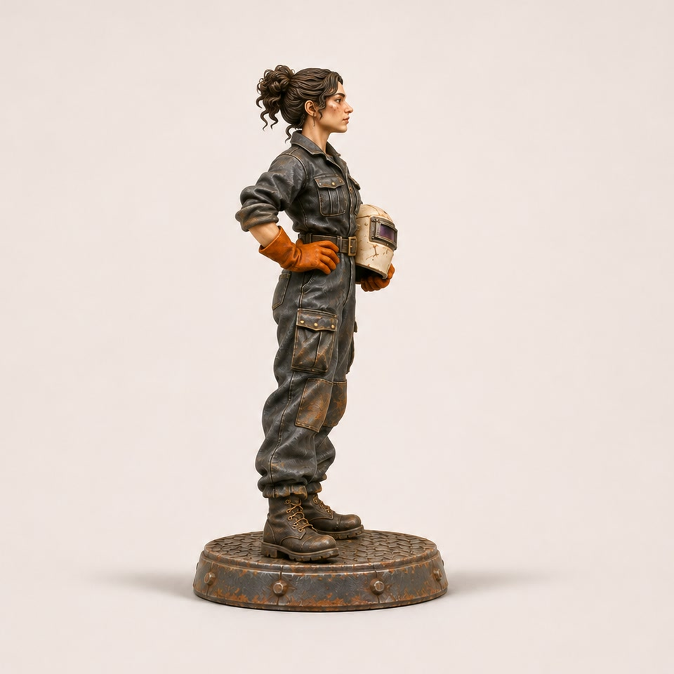
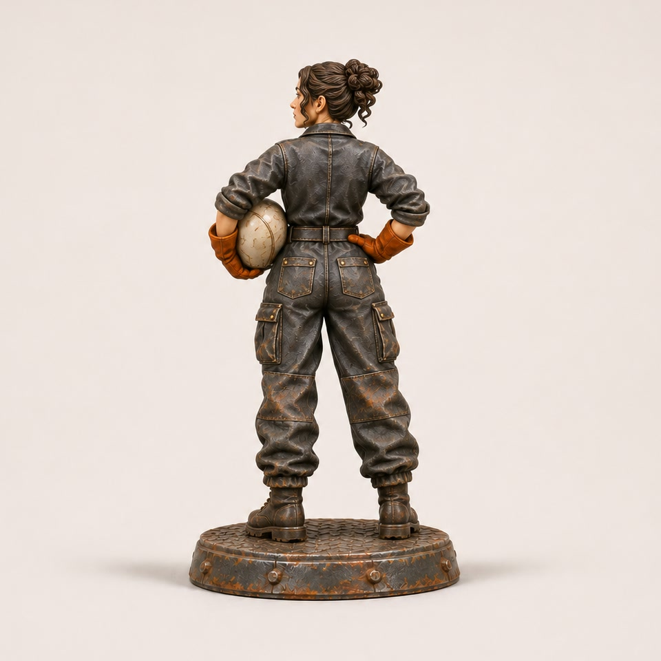
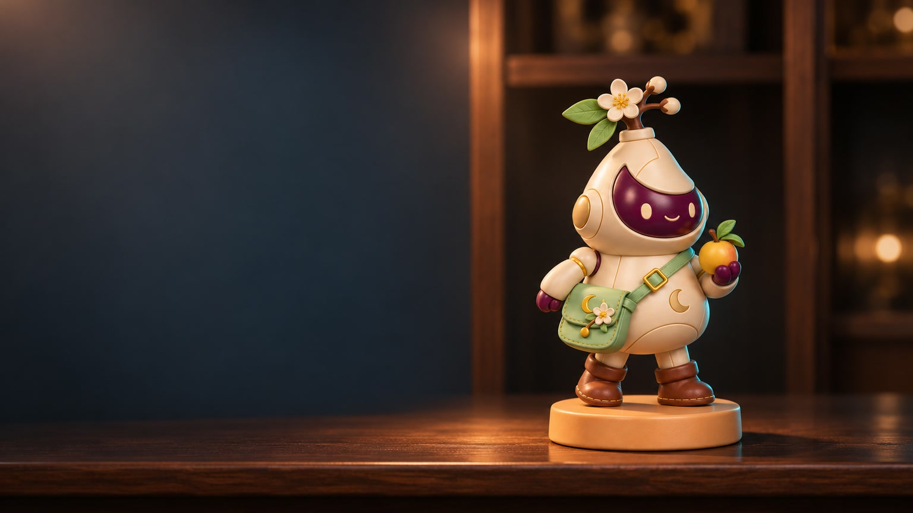

FIGURA. / IMAGE STUDY 01 / 2026.11.19
讓每個角度，都像同一件收藏。
兩款虛構公仔的材質、棚拍與多角度一致性試作。點圖片可開啟 JPEG 原尺寸對照；角度尚未全部通過，先不批次替換商品。
AI 生成展示素材
以下為虛構公仔概念圖，採擬真公仔渲染風格；非實物攝影，非可操作的 3D 模型。材質是概念設定，背面細節尚待定稿。
月梨信差 · 月丘果園郵隊

棚拍材質、主要配件、完整底座通過；由較寬鬆的生成圖裁切為 960²，未放大。

身份與配色相近，但不是嚴格 90°；花枝方向與包面朝向仍有漂移，不作正式多角度圖。

左右持物未互換；後殼接縫與背帶路徑是背面設計提案，尚未完成全角度造型定稿。
冷熔鍋爐姊 · 冬炭修理廳

可辨識樹脂髮束、塗裝衣褶、手套與底座；由較寬鬆的生成圖裁切為 960²，未放大。

材質與配色一致；頭的轉向、手指位置與衣褶有漂移，需固定造型後再修，不視為同一雕塑的精確側面。

持物與叉腰左右保留；新增的背袋、後縫線屬背面提案，未驗證同一幾何模型。
收藏場景 · Banner 概念

暖色主光、冷色輪廓光與左側留白通過氣氛評估；細節仍需依最終角色定稿核對，未做手機專用構圖。